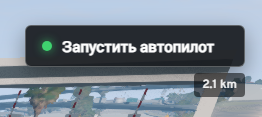
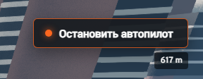
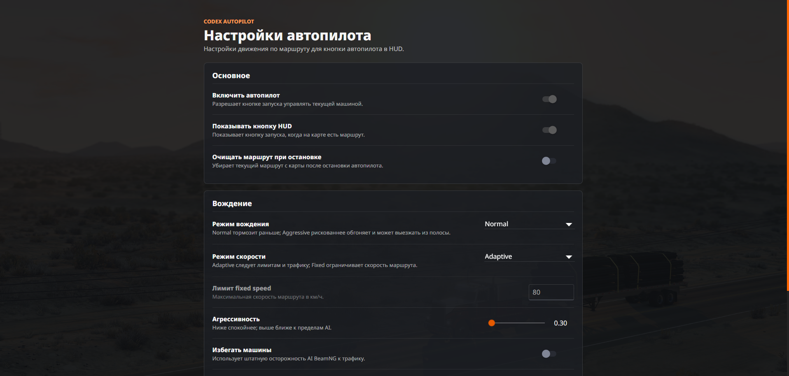

Строит путь по маршруту карты
Берёт текущий route planner BeamNG, превращает его в AI waypoint-путь и ведёт машину к конечной точке.
BeamNG.drive mod · v0.3.0
Codex Autopilot добавляет HUD-кнопку запуска, меню тонкой настройки и аккуратное управление машиной через встроенный AI BeamNG.


Спокойнее тормозит, держит полосу и следует дорожным лимитам.
Берёт текущий route planner BeamNG, превращает его в AI waypoint-путь и ведёт машину к конечной точке.
Когда маршрут уже задан, появляется компактная кнопка «Запустить автопилот» с расстоянием до цели.
При остановке мод повторно отдаёт stop-команду, ждёт снижения скорости и затем отключает AI с ручником.
Фишки мода
Функции взяты из Lua-расширения, UI-модуля и info.json внутри архива.
Запускает BeamNG AI по маршруту, который ты заранее поставил на карте. Без маршрута мод честно предупреждает, что сначала нужна точка назначения.
Кнопка появляется поверх игры, когда есть маршрут. В активном состоянии она превращается в Stop Autopilot и показывает дистанцию в метрах или километрах.
Normal тормозит раньше и старается держать полосу. Aggressive повышает риск, жёстче использует AI-параметры и может выходить из полосы ради темпа.
Adaptive следует дорожным лимитам и трафику. Fixed задаёт ограничение скорости маршрута вручную, от 5 до 500 км/ч.
Мод отслеживает машины впереди, временно ставит скорость AI в ноль при угрозе и восстанавливает профиль движения, когда путь свободен.
Есть агрессивность 0.2-2.0, избегание машин, удержание полосы, видимость HUD и очистка маршрута после остановки.
Настройки сохраняются в settings/CodexAutopilot.json, поэтому выбранный профиль переживает перезапуск игры.
Тексты меню, HUD и уведомлений переключаются по языку UI BeamNG: RU для русского, EN для остальных локалей.
Интерфейс
Мод добавляет пункт «Настройки автопилота» в меню, отдельную страницу параметров и HUD-виджет поверх игры.

Установка
Архив уже собран в формате BeamNG-мода. Распаковывать его не нужно.
Нажми кнопку и оставь файл codex_autopilot.zip целым.
Перейди в корневую папку BeamNG.drive и найди или создай папку mods.
Итоговый путь должен выглядеть так: BeamNG.drive/mods/codex_autopilot.zip.
Поставь маршрут на карте, вернись к машине и нажми HUD-кнопку запуска.
Под капотом
lua/ge/extensions/codex/autopilot.lua
scripts/modScript.lua загружает расширение
FAQ
Нужен активный маршрут на карте, включённый HUD-виджет в настройках и машина игрока. Мод показывает предупреждение, если маршрута или машины нет.
Мод управляет штатным AI BeamNG: строит waypoint-путь, применяет профиль скорости, агрессивности, удержания полосы и реакции на трафик.
Да. В меню Codex Autopilot есть кнопка сброса: она возвращает enabled HUD, Normal, Adaptive, 80 км/ч fixed limit, aggression 0.3 и включённое избегание машин.